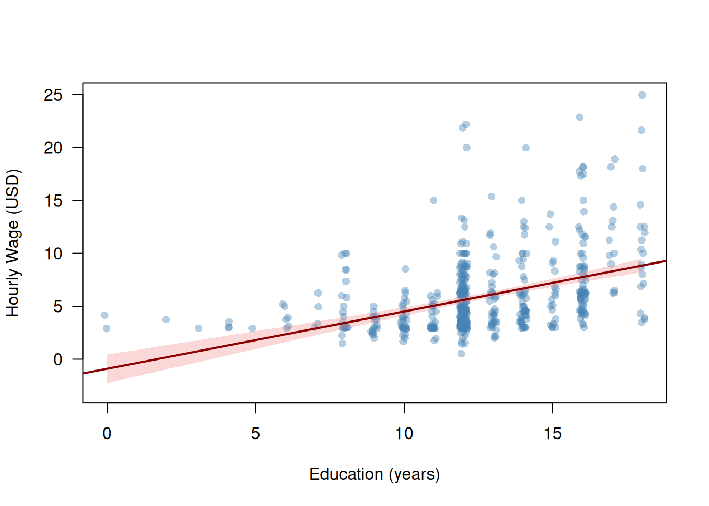
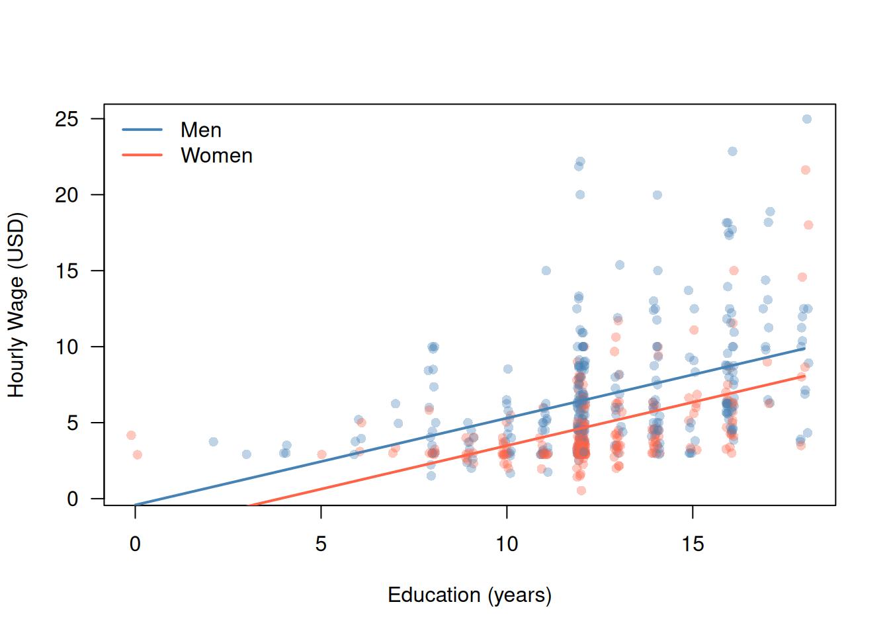
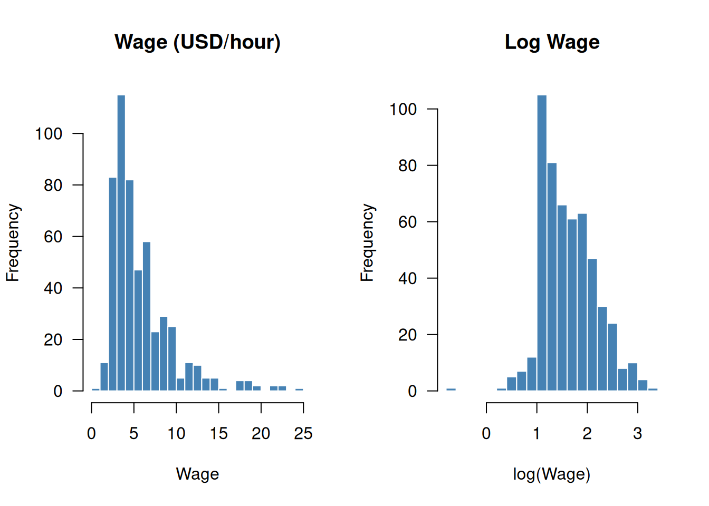
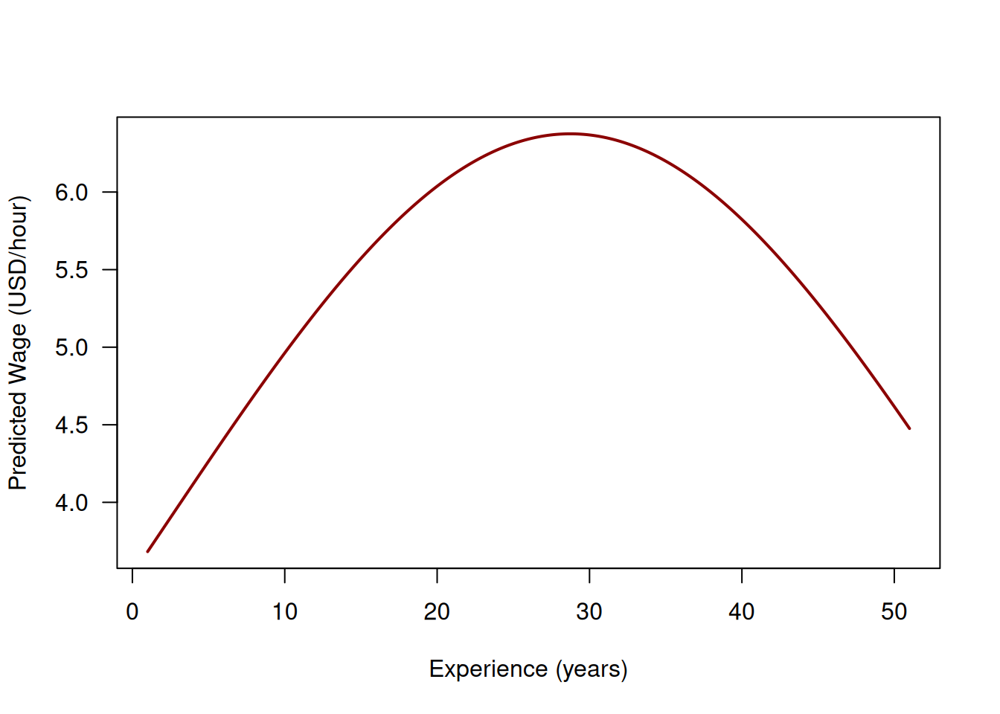
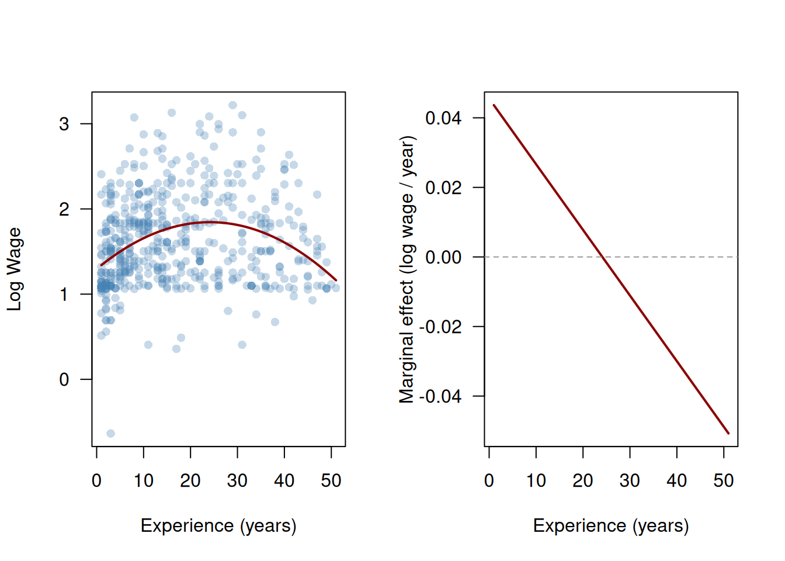
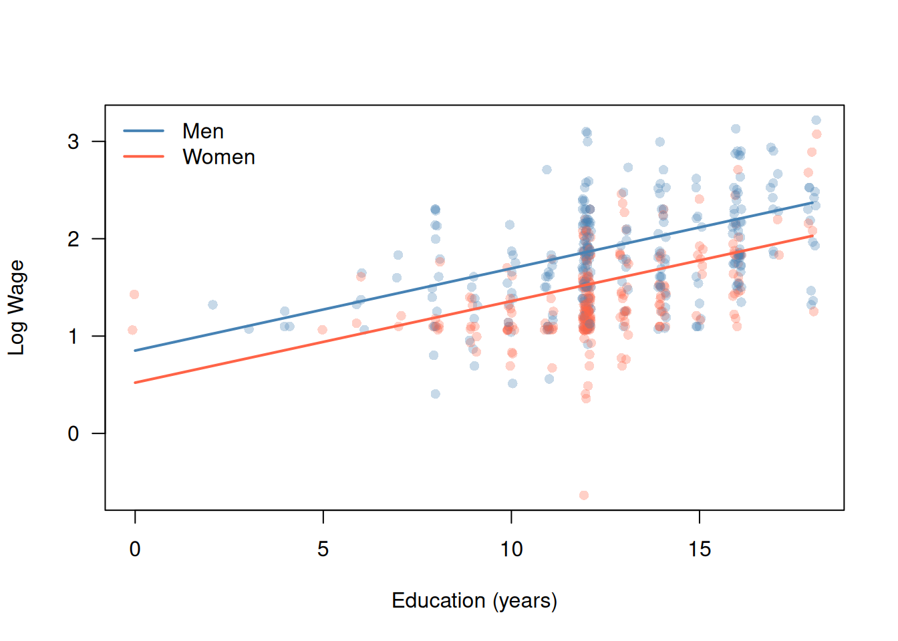
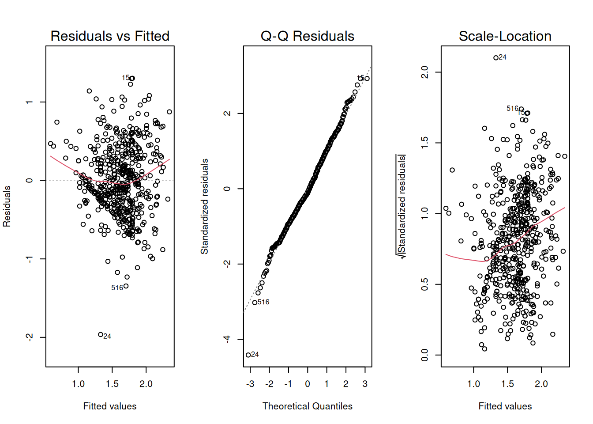
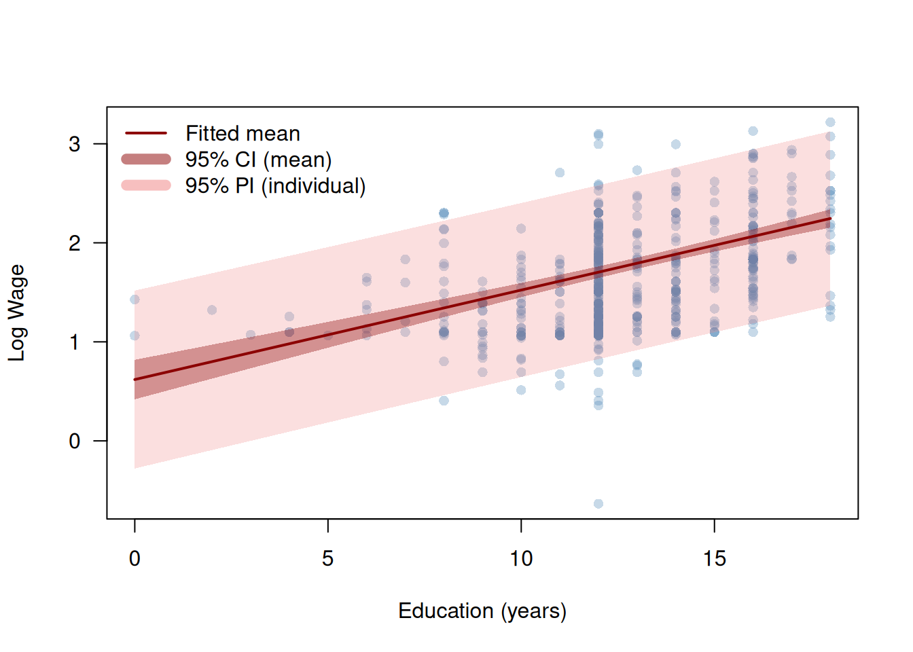

How much does one additional year of schooling increase a worker’s hourly earnings? This question sits at the heart of labor economics and allows us to learn a lot what data can actually tell us. We observe in data that workers with more schooling tend to earn more — but how large is this association, how precisely can we estimate it, and can we say that education causes higher wages?
To answer these questions we use the wage1 dataset from the wooldridge package, which contains data on 526 workers drawn from the 1976 Current Population Survey. Table 3.1 summarizes the key variables.
library("wooldridge")library("kableExtra")data("wage1")vars<-c("wage", "educ", "exper", "tenure", "female")desc_tab<-data.frame( Variable =vars, Description =c("Hourly wage (USD)","Years of education","Years of work experience","Years with current employer","= 1 if female, 0 if male"), Mean =round(sapply(vars, \(v)mean(wage1[[v]])), 2), SD =round(sapply(vars, \(v)sd(wage1[[v]])), 2), Min =round(sapply(vars, \(v)min(wage1[[v]])), 2), Max =round(sapply(vars, \(v)max(wage1[[v]])), 2), row.names =NULL)kbl(desc_tab, col.names =c("Variable", "Description", "Mean", "SD", "Min", "Max"), align =c("l", "l", "r", "r", "r", "r"))|>kable_styling(bootstrap_options =c("striped", "hover"))
Table 3.1: Key variables in the wage1 dataset (\(n = 526\) workers, 1976 Current Population Survey).
Variable
Description
Mean
SD
Min
Max
wage
Hourly wage (USD)
5.90
3.69
0.53
24.98
educ
Years of education
12.56
2.77
0.00
18.00
exper
Years of work experience
17.02
13.57
1.00
51.00
tenure
Years with current employer
5.10
7.22
0.00
44.00
female
= 1 if female, 0 if male
0.48
0.50
0.00
1.00
The scatter plot below shows hourly wages (wage) against years of education (educ) for all \(n=526\) workers. Because education is measured in integer years, we add a small horizontal jitter to avoid overplotting. The line is a preview of what this chapter builds up to: the fitted simple linear regression of wages on education.
lm_simple<-lm(wage~educ, data =wage1)x_seq<-seq(min(wage1$educ), max(wage1$educ), length.out =200)ci<-predict(lm_simple, newdata =data.frame(educ =x_seq), interval ="confidence")plot(jitter(wage1$educ, factor =0.6), wage1$wage, xlab ="Education (years)", ylab ="Hourly Wage (USD)", pch =16, col =adjustcolor("steelblue", alpha.f =0.4), las =1, ylim =range(wage1$wage, -3))polygon(c(x_seq, rev(x_seq)),c(ci[, "lwr"], rev(ci[, "upr"])), col =adjustcolor("lightcoral", alpha.f =0.3), border =NA)abline(lm_simple, col ="darkred", lwd =2)

Figure 3.1: Hourly wages and years of education for \(n=526\) workers. The line is the fitted simple linear regression; the shaded band is a 95% confidence interval for the regression line.
Two features of Figure 3.1 will guide the entire chapter. First, the positive slope of the fitted line tells us that wages rise with education on average — but by exactly how much, and how sure are we? Second, the wide vertical spread of points around the line shows that education alone explains only part of the variation in wages: workers with the same years of schooling earn very different amounts. This raises the question of what else matters — experience, tenure, gender?
Guiding Questions
Estimation: By how much does an additional year of education increase wages, on average?
Inference: Is this association statistically reliable, or could it reflect chance variation in our sample of \(n=526\) workers?
We address a third, harder question in Section 3.7: does education cause higher wages, or do we merely observe an association?
This chapter develops the statistical tools to answer questions 1 and 2 systematically. We begin with the simple linear regression model — wages regressed on education alone — and then extend to the multiple linear regression model, which lets us control for further variables such as experience, tenure, and gender simultaneously.
3.2 Simple Linear Regression
We begin with the simplest version of the linear regression model: a single predictor \(X_i\) explaining variation in an outcome \(Y_i\). In the wages example, \(Y_i\) is the hourly wage and \(X_i\) is the years of education of worker \(i\).
3.2.1 The Model
The simple linear regression model is given by
\[
Y_i = \beta_1 + \beta_2 X_i + \varepsilon_i, \quad i = 1, \dots, n,
\qquad(3.1)\]
where:
\(Y_i\) is the dependent variable (hourly wage of worker \(i\))
\(X_i\) is the independent variable (years of education of worker \(i\))
\(\beta_1\) is the intercept — the expected wage when \(X_i = 0\)
\(\beta_2\) is the slope — the expected change in wages for one additional year of education
\(\varepsilon_i\) is the “error” term — capturing all other determinants of wages beyond education (ability, family background, occupation, parents, …)
Crucial Assumption on \(\varepsilon_i\): Exogeneity
\[
E(\varepsilon_i \mid X_i) = 0, \quad i = 1, \dots, n
\]
That is, the mean of \(\varepsilon_i\) is zero regardless of the value of \(X_i,\)\[
E(\varepsilon_i \mid X_i = x) = 0, \quad i = 1, \dots, n
\] for all possible values of \(x.\) One often says: “\(\varepsilon_i\) must be mean independent of \(X_i.\)”
The mean independece or exogeneity assumption effectively requires that, conditional on education, no other factor drives wages that is also correlated with education. (Admittedly, this requirement is not readily visible from the above conditional mean statement, but one can show that this requirement is implied by the assumption.)
Problem: Generally, we cannot proof that the exogeneity assumption is true, but need to argue its plausibility using specific expert knowledge about the data problem of interest.
The simple linear regression modelEquation 3.1 specifies the conditional mean of \(Y_i\) given \(X_i=x\) as a linear function \[\begin{align*}
m(x)
& = E(Y_i \mid X_i = x) \\
& = E(\beta_1 + \beta_2 X_i + \varepsilon_i \mid X_i = x) \\
& = E(\beta_1 + \beta_2 X_i\mid X_i = x) + \underbrace{E(\varepsilon_i \mid X_i = x)}_{=0} \\
& = \beta_1 + \beta_2 x
\end{align*}\]
The slope \(\beta_2\) equals the partial derivative of the conditional mean function \(m(x)=E(Y_i\mid X_i=x)\) with respect to \(X_i=x\):
In words: a one-unit increase in \(X_i\) changes the expected value of \(Y_i\) by \(\beta_2\) units. In the wages example, \(\beta_2\) measures the expected wage premium per additional year of schooling, in dollars per hour.
The model specifies the conditional mean of wages as linear in education. It does not say every worker with the same education earns the same wage. The error term \(\varepsilon_i\) captures the deviation of worker \(i\)’s actual wage from the conditional mean function \(E(Y_i \mid X_i=x)=m(x).\)
3.2.2 OLS Estimation
The parameters \(\beta_1\) and \(\beta_2\) are unknown. The Ordinary Least Squares (OLS) estimator chooses \(\hat\beta_1\) and \(\hat\beta_2\) to minimize the Residual Sum of Squares (RSS): \[
\operatorname{RSS} = \operatorname{RSS}(b_1,b_2) = \sum_{i=1}^{n} \bigl(Y_i - b_1 - b_2 X_i\bigr)^2.
\]
Taking partial derivatives of \(\operatorname{RSS}(\beta_1,\beta_2)\) with respect to \(\beta_1\) and \(\beta_2\), setting them to zero, and solving yields the closed-form OLS estimators:
Interpretation:\(\hat\beta_2 \approx 0.54\) means that on average each additional year of education is associated with an increase of approximately 54 cents per hour in wages. The intercept \(\hat\beta_1 \approx -0.90\) is the predicted wage for a worker with zero years of education. Figure 3.1 shows that this predicted value is outside the observed wages \(Y_i\) for \(X_i=\)educ\(_i\approx 0.\) This issue means that our simple linear regression model is misspecified - a well specified model has its regression line in the center of the data cloud for all values of \(X_i.\) Below, we will improve the model specification using a log-transformation \(\log(Y_i)\); see Section 3.4.1.
3.2.3 Assumptions
The OLS estimators \(\hat\beta_1\) and \(\hat\beta_2\) have desirable statistical properties under four assumptions.
Assumption 1: Linear Model and Random Sampling
The data \((Y_1, X_1), \dots, (Y_n, X_n)\) are a realization of an i.i.d. random sample from the simple linear regression model in Equation 3.1. Random sampling means the \(n\) observations are drawn independently from the same population distribution.
Assumption 2: Exogeneity
\[E(\varepsilon_i \mid X_i) = 0.\]
The expected error is zero regardless of the value of \(X_i\). This requires that, conditional on education \(X_i,\) no systematic factor drives wages that is also correlated with education \(X_i.\)
When Does Exogeneity Fail?
Exogeneity fails when an omitted variable, say \(W_i,\) is correlated with both \(X_i\) and \(Y_i\).
Let, for instance, denote workers’ ability by \(W_i.\) This variable is hardly measurable and quantifiable and is thus usually contained in the error term \(\varepsilon_i.\)
If higher-ability workers tend to acquire more education, i.e. \(\operatorname{Cov}(X_i,W_i)>0,\)and if higher-ability workers tend to have higher wages, i.e. \(\operatorname{Cov}(Y_i,W_i)>0,\) then \(X_i\) is not exogenous and, equivalently, \(\varepsilon_i\) is not mean-independent of \(X_i\), \[
E(\varepsilon_i \mid X_i) \neq 0.
\] This is the omitted variable problem, revisited in Section 3.3.1. In such a situation, we cannot trust our estimates.
Assumption 3: Variation in \(X\)
\[\operatorname{Var}(X_i) > 0.\]
The predictor must have positive variance. If all workers had identical education levels, the denominator in Equation 3.3 would be zero and \(\hat\beta_2\) could not be computed.
Assumption 4: Homoskedasticity
\[\operatorname{Var}(\varepsilon_i \mid X_i) = \sigma^2
\quad\text{for all } i.\]
The variance of the error is constant across all values of \(X_i\). The scatter plot Figure 3.1 suggests this may be violated: the spread of wages around the regression line appears wider for more-educated workers. We address this when introducing heteroskedasticity-robust standard errors in Section 3.3.5.
3.2.4 Properties of the OLS Estimator
Under Assumptions 1–3, the OLS estimators are unbiased:
Under Assumptions 1–4, OLS is the Best Linear Unbiased Estimator (BLUE): among all unbiased estimators of \(\beta_2\) that are linear in \(Y_1, \dots, Y_n\), OLS has the smallest variance.
3.2.5 Statistical Inference: \(t\)-Test for \(\beta_2\)
We have \(\hat\beta_2 \approx 0.54\). But could this estimate simply reflect chance variation in our sample of 526 workers, even if the true \(\beta_2 = 0\)?
Connecting to Course 1. You tested \(H_0\colon \mu = \mu_0\) using
\[
H_0\colon \beta_2 = 0
\quad\text{(education has no effect on wages)}
\]
against the two-sided alternative \(H_1\colon \beta_2 \neq 0\) using
\[
t = \frac{\hat\beta_2}{\widehat{\operatorname{SE}}(\hat\beta_2)}
\sim t_{n-2}
\quad\text{under } H_0 \text{ and Assumptions 1–4.}
\qquad(3.7)\]
The distribution is \(t_{n-2}\) — not \(t_{n-1}\) — because two parameters have been estimated. We reject \(H_0\) at significance level \(\alpha\) when \(|t| > t_{n-2,\, 1-\alpha/2}\).
The summary() output reports \(\hat\beta_j\), \(\widehat{\operatorname{SE}}(\hat\beta_j)\), the \(t\)-statistic, and the \(p\)-value for each coefficient. confint() returns confidence intervals:
Interpretation: The \(t\)-statistic on educ far exceeds the critical value and the \(p\)-value is essentially zero, so we reject \(H_0\colon\beta_2 = 0\) at any conventional significance level. The 95% confidence interval — approximately \([0.45,\, 0.63]\) — is entirely above zero, confirming that the positive association between education and wages is statistically reliable.
Statistical significance does not imply practical importance. A small \(p\)-value tells us the association is unlikely to be zero; it does not tell us whether the magnitude \(\hat\beta_2 \approx 0.54\) is large enough to matter. Always report and interpret the estimated size of the effect, not just the \(p\)-value.
3.3 Multiple Linear Regression
Education alone explains only 16.5% of wage variation. Other factors — work experience, job tenure, gender — clearly matter. Adding them simultaneously serves two goals: it improves prediction accuracy, and, as we will see, it corrects for bias in the estimate of the education effect.
3.3.1 Why Simple Regression Is Not Enough: Omitted Variable Bias
Compare the OLS estimate of the education coefficient in two models:
lm_educ_exper<-lm(wage~educ+exper, data =wage1)rbind( simple =coef(lm_simple)["educ"], multiple =coef(lm_educ_exper)["educ"])
educ
simple 0.5413593
multiple 0.6442721
The coefficient on educ changes when we add exper. This is not a coincidence — it is omitted variable bias (OVB).
The OVB formula. Suppose the true model contains two predictors:
where \(\hat\delta_1\) is the OLS slope from regressing \(X_2\) on \(X_1\). The bias is non-zero whenever (i) \(\beta_3 \neq 0\) (the omitted variable affects \(Y\)) and (ii) \(\hat\delta_1 \neq 0\) (it is correlated with \(X_1\)).
In the wages example, \(X_1 = \text{educ}\) and \(X_2 = \text{exper}\). Workers who spent more years in school have fewer years of work experience, so \(\hat\delta_1 < 0\). Experience raises wages (\(\beta_3 > 0\)). The bias \(\beta_3 \cdot \hat\delta_1 < 0\) means the simple regression overstates the return to education:
delta1<-coef(lm(exper~educ, data =wage1))["educ"]beta2<-coef(lm_educ_exper)["exper"]c(delta1 =delta1, beta2 =beta2, bias =beta2*delta1)
OVB is a causal problem, not a mechanical one. Including additional control variables reduces bias only if those variables are themselves exogenous. Adding a “bad control” — a variable that is affected by \(X_1\) — can introduce new bias. We return to this in Section 3.7.
3.3.2 The Multiple Linear Regression Model
The multiple linear regression model with \(p\) predictors is
the expected change in \(Y_i\) for a one-unit increase in \(X_{ik}\)holding all other predictors constant. This is the key advantage over simple regression.
The four assumptions from Section 3.2.3 generalize by replacing \(X_i \in \mathbb{R}\) with \(X_i \in \mathbb{R}^{K}\) and adding:
Rank condition:\(\operatorname{rank}(X) = K\) almost surely — no predictor is a perfect linear combination of the others.
3.3.3 OLS in Matrix Form
The OLS estimator minimizes \(\text{RSS} = (Y - X\beta)^\top(Y - X\beta)\). Setting the gradient to zero gives the normal equations\(X^\top X\,\hat\beta = X^\top Y\). Under Assumption 3, \(X^\top X\) is invertible and the unique solution is
\[
\hat\beta = (X^\top X)^{-1} X^\top Y.
\qquad(3.13)\]
The fitted values are
\[
\hat Y = X\hat\beta = X(X^\top X)^{-1}X^\top Y =: HY,
\qquad(3.14)\]
where \(H = X(X^\top X)^{-1}X^\top\) is the \((n \times n)\)projection matrix (hat matrix). The diagonal elements \(h_{ii} = [H]_{ii}\) are leverage statistics: large \(h_{ii}\) means observation \(i\) is far from the center of the predictor space and has an outsized influence on \(\hat\beta\).
lm_multiple<-lm(wage~educ+exper+tenure, data =wage1)X<-model.matrix(lm_multiple)Y<-wage1$wagebeta_hat<-solve(t(X)%*%X)%*%t(X)%*%Yround(cbind(manual =beta_hat, lm =coef(lm_multiple)), 4)
Interpretation: Controlling for experience and tenure, each additional year of education is associated with approximately 0.6 dollars/hour higher wages.
3.3.4 Assessing Model Fit: \(R^2\), Adjusted \(R^2\), and RSE
\(R^2\) from Equation 3.31never decreases when a predictor is added, even if that predictor is pure noise. Comparing \(R^2\) across models with different numbers of predictors is therefore misleading.
The adjusted \(R^2\) penalizes for additional parameters:
Heteroskedasticity. If \(\operatorname{Var}(\varepsilon_i \mid X_i)
= \sigma_i^2\) varies across observations, Equation 3.16 is incorrect. The true variance has the sandwich form:
The HC3 estimator replaces the unknown \(\sigma_i^2\) with \(\hat{\varepsilon}_i^2/(1-h_{ii})^2\), which provides the best finite-sample performance (Long and Ervin 2000). The sandwich and lmtest packages implement this:
The following objects are masked from 'package:base':
as.Date, as.Date.numeric
coeftest(lm_multiple, vcov =vcovHC(lm_multiple, type ="HC3"))
t test of coefficients:
Estimate Std. Error t value Pr(>|t|)
(Intercept) -2.872735 0.819016 -3.5075 0.0004913 ***
educ 0.598965 0.061860 9.6826 < 2.2e-16 ***
exper 0.022340 0.010663 2.0950 0.0366507 *
tenure 0.169269 0.029854 5.6698 2.368e-08 ***
---
Signif. codes: 0 '***' 0.001 '**' 0.01 '*' 0.05 '.' 0.1 ' ' 1
In applied work, always report HC3 robust standard errors. The coefficient estimates \(\hat\beta\) are unchanged; only standard errors, \(t\)-statistics, and confidence intervals are affected.
3.3.6 Statistical Inference
\(t\)-Tests for Individual Coefficients
The \(t\)-test from Section 3.2.5 extends directly. Under \(H_0\colon\beta_j = 0\):
Analysis of Variance Table
Model 1: wage ~ educ
Model 2: wage ~ educ + exper + tenure
Res.Df RSS Df Sum of Sq F Pr(>F)
1 524 5980.7
2 522 4966.3 2 1014.4 53.31 < 2.2e-16 ***
---
Signif. codes: 0 '***' 0.001 '**' 0.01 '*' 0.05 '.' 0.1 ' ' 1
Power and Consistency
The power of the \(t\)-test — the probability of rejecting \(H_0\) when \(\beta_j \neq 0\) — increases with \(|\beta_j|\), with \(n\), and with variation in \(X_j\). As \(n \to \infty\), power \(\to 1\) for any fixed \(\beta_j \neq 0\): OLS is consistent, \(\hat\beta_j
\xrightarrow{p} \beta_j\).
The simulation below illustrates power as a function of sample size:
Figure 3.2: Simulated power of the two-sided t-test (α = 0.05) for H₀: β₁ = 0 as a function of sample size. True slope β₁ = 0.5; 2 000 Monte Carlo replications per point.
3.3.7 A Binary Predictor: The Gender Wage Gap
The variable female is a binary (dummy) variable: it equals 1 for female workers and 0 for male workers. Adding it to the model
The scatter plot below shows the two fitted lines (evaluated at mean exper and tenure):
beta<-coef(lm_gender)exper_bar<-mean(wage1$exper)tenure_bar<-mean(wage1$tenure)educ_seq<-seq(0, 18, length.out =200)wage_men<-beta["(Intercept)"]+beta["educ"]*educ_seq+beta["exper"]*exper_bar+beta["tenure"]*tenure_barwage_women<-wage_men+beta["female"]pt_col<-ifelse(wage1$female==1,adjustcolor("tomato", alpha.f =0.35),adjustcolor("steelblue", alpha.f =0.35))plot(jitter(wage1$educ, factor =0.6), wage1$wage, col =pt_col, pch =16, xlab ="Education (years)", ylab ="Hourly Wage (USD)", las =1)lines(educ_seq, wage_men, col ="steelblue", lwd =2)lines(educ_seq, wage_women, col ="tomato", lwd =2)legend("topleft", legend =c("Men", "Women"), col =c("steelblue", "tomato"), lwd =2, bty ="n")

Figure 3.3: Fitted wage-education lines for men (blue) and women (red) from model (4). Parallel lines impose identical returns to education for both groups.
Model (4) assumes equal returns to education for men and women (parallel lines). We relax this restriction with an interaction term in Section 3.4.3.
3.4 Extensions of the Linear Model
The multiple linear regression model \(Y = X\beta + \varepsilon\) is linear in the parameters\(\beta\), not necessarily in the original variables. We can include non-linear transformations of the predictors or products of predictors as columns of \(X\) — the model remains linear and all results from Section 3.3 continue to apply.
3.4.1 Log Transformations: The Mincer Equation
Motivation: The Distribution of Wages
Hourly wages are right-skewed: a few high earners pull the mean well above the median. Taking logarithms compresses the right tail and produces a more symmetric distribution.
par(mfrow =c(1, 2))hist(wage1$wage, breaks =25, col ="steelblue", border ="white", main ="Wage (USD/hour)", xlab ="Wage", las =1)hist(wage1$lwage, breaks =25, col ="steelblue", border ="white", main ="Log Wage", xlab ="log(Wage)", las =1)par(mfrow =c(1, 1))

Figure 3.4: Distribution of hourly wages (left) and log hourly wages (right) for 526 workers. Taking logarithms reduces right-skewness from 2.0 to 0.4 and brings the distribution closer to symmetry.
Interpretation of Log-Level Models
In a log-level model\(\log(Y_i) = \beta_1 + \beta_2 X_i +
\varepsilon_i\), the slope \(\beta_2\) has a percentage interpretation. Using the approximation \(\log(1 + r) \approx r\) for small \(r\):
so a one-unit increase in \(X_i\) is associated with approximately a \(100 \cdot \beta_2\%\) change in \(Y_i\). For larger \(\hat\beta_2\), the exact percentage change is \(100 \cdot (\exp(\hat\beta_2) - 1)\%\).
The Mincer Earnings Equation
The standard specification in the economics of education is the Mincer equation(Mincer1974?):
Compared to the levels models in Section 3.3, this specification:
Accommodates the right-skewed wage distribution.
Gives \(\hat\beta_2\) a natural interpretation as the proportional return to one year of schooling.
Includes a quadratic in experience to capture diminishing returns — a case of polynomial regression, examined in Section 3.4.2.
lm_mincer<-lm(lwage~educ+exper+expersq, data =wage1)summary(lm_mincer)
Call:
lm(formula = lwage ~ educ + exper + expersq, data = wage1)
Residuals:
Min 1Q Median 3Q Max
-1.96387 -0.29375 -0.04009 0.29497 1.30216
Coefficients:
Estimate Std. Error t value Pr(>|t|)
(Intercept) 0.1279975 0.1059323 1.208 0.227
educ 0.0903658 0.0074680 12.100 < 2e-16 ***
exper 0.0410089 0.0051965 7.892 1.77e-14 ***
expersq -0.0007136 0.0001158 -6.164 1.42e-09 ***
---
Signif. codes: 0 '***' 0.001 '**' 0.01 '*' 0.05 '.' 0.1 ' ' 1
Residual standard error: 0.4459 on 522 degrees of freedom
Multiple R-squared: 0.3003, Adjusted R-squared: 0.2963
F-statistic: 74.67 on 3 and 522 DF, p-value: < 2.2e-16
Interpretation of \(\hat\beta_\text{educ}\):
b_educ<-coef(lm_mincer)["educ"]cat("Approximate return:", round(100*b_educ, 1), "% per year\n")
Approximate return: 9 % per year
cat("Exact return: ", round(100*(exp(b_educ)-1), 1), "% per year\n")
Exact return: 9.5 % per year
Each additional year of education is associated with approximately a 9% increase in hourly wages — a much more interpretable and economically meaningful number than the 54 cents per hour from the simple levels model.
The fitted Mincer experience profile (at mean education):
x_seq<-seq(1, 51, length.out =300)b<-coef(lm_mincer)log_fit<-b["(Intercept)"]+b["educ"]*mean(wage1$educ)+b["exper"]*x_seq+b["expersq"]*x_seq^2plot(x_seq, exp(log_fit), type ="l", col ="darkred", lwd =2, las =1, xlab ="Experience (years)", ylab ="Predicted Wage (USD/hour)")

Figure 3.5: Fitted Mincer wage-experience profile at mean education (12.6 years). Wages are back-transformed to USD/hour for interpretability.
A note on \(R^2\) comparisons. The Mincer model has \(R^2 \approx 0.30\) while the levels model lm(wage ~ educ + exper + expersq) has \(R^2 \approx 0.27\). These numbers are not directly comparable because the dependent variable differs (\(\log(\text{wage})\) vs \(\text{wage}\)). The \(R^2\) measures the fraction of variance of the respective outcome explained — not of wages in a common unit.
3.4.2 Polynomial Regression
The Mincer equation Equation 3.22 already contains \(\text{exper}^2\). This is an instance of polynomial regression: including higher-order powers of a predictor as additional columns of \(X\). The model is still linear in the parameters, so OLS applies unchanged.
For the experience-wage relationship, we expect \(\beta_2 > 0\) (experience raises log wages) and \(\beta_3 < 0\) (at a decreasing rate). We fit this model using log wages for consistency with Section 3.4.1:
lm_poly<-lm(lwage~exper+expersq, data =wage1)summary(lm_poly)
Call:
lm(formula = lwage ~ exper + expersq, data = wage1)
Residuals:
Min 1Q Median 3Q Max
-2.05828 -0.33126 -0.05044 0.31806 1.47493
Coefficients:
Estimate Std. Error t value Pr(>|t|)
(Intercept) 1.2952908 0.0494812 26.177 < 2e-16 ***
exper 0.0455341 0.0058595 7.771 4.15e-14 ***
expersq -0.0009439 0.0001291 -7.312 9.93e-13 ***
---
Signif. codes: 0 '***' 0.001 '**' 0.01 '*' 0.05 '.' 0.1 ' ' 1
Residual standard error: 0.5041 on 523 degrees of freedom
Multiple R-squared: 0.104, Adjusted R-squared: 0.1006
F-statistic: 30.35 on 2 and 523 DF, p-value: 3.377e-13
The fitted curve and the marginal effect:
b<-coef(lm_poly)y_fit<-b["(Intercept)"]+b["exper"]*x_seq+b["expersq"]*x_seq^2me<-b["exper"]+2*b["expersq"]*x_seqpar(mfrow =c(1, 2))plot(wage1$exper, wage1$lwage, col =adjustcolor("steelblue", alpha.f =0.3), pch =16, las =1, xlab ="Experience (years)", ylab ="Log Wage")lines(x_seq, y_fit, col ="darkred", lwd =2)plot(x_seq, me, type ="l", col ="darkred", lwd =2, las =1, xlab ="Experience (years)", ylab ="Marginal effect (log wage / year)")abline(h =0, lty =2, col ="grey60")par(mfrow =c(1, 1))

Figure 3.6: Fitted quadratic regression of log wages on experience (left) and the implied marginal effect of one additional year of experience (right), in log-wage units (≈ percentage per year).
Interpretation: The marginal effect Equation 3.24 is zero at \(X^* = -\hat\beta_2/(2\hat\beta_3)\), the experience level where log wages peak:
peak_exper<--coef(lm_poly)["exper"]/(2*coef(lm_poly)["expersq"])cat("Log wage peaks at experience =", round(peak_exper, 1), "years\n")
Log wage peaks at experience = 24.1 years
The peak at approximately 28–29 years of experience is consistent with the Mincer literature: workers’ wages rise steeply early in their careers and level off or decline slightly near retirement age.
3.4.3 Interaction Effects: Do Returns to Education Differ by Gender?
We now combine the log-wage specification with an interaction term to test whether the proportional return to education differs between men and women. Adding \(\text{educ}_i \times \text{female}_i\) to the Mincer equation gives
b<-coef(lm_interact)cat("Return to education, men: ",round(100*(exp(b["educ"])-1), 1), "% per year\n")
Return to education, men: 8.8 % per year
cat("Return to education, women:",round(100*(exp(b["educ"]+b["educ:female"])-1), 1),"% per year\n")
Return to education, women: 8.7 % per year
The non-parallel fitted log-wage lines (at mean exper):
b<-coef(lm_interact)exper_bar<-mean(wage1$exper)educ_seq<-seq(0, 18, length.out =200)lw_men<-b["(Intercept)"]+b["educ"]*educ_seq+b["exper"]*exper_bar+b["expersq"]*exper_bar^2lw_women<-(b["(Intercept)"]+b["female"])+(b["educ"]+b["educ:female"])*educ_seq+b["exper"]*exper_bar+b["expersq"]*exper_bar^2pt_col<-ifelse(wage1$female==1,adjustcolor("tomato", alpha.f =0.3),adjustcolor("steelblue", alpha.f =0.3))plot(jitter(wage1$educ, factor =0.6), wage1$lwage, col =pt_col, pch =16, las =1, xlab ="Education (years)", ylab ="Log Wage")lines(educ_seq, lw_men, col ="steelblue", lwd =2)lines(educ_seq, lw_women, col ="tomato", lwd =2)legend("topleft", legend =c("Men", "Women"), col =c("steelblue", "tomato"), lwd =2, bty ="n")

Figure 3.7: Fitted log-wage lines for men (blue) and women (red) from the interaction model. Non-parallel lines reflect different proportional returns to education by gender.
If \(\hat\beta_6\) is statistically significant, women face a different proportional wage return per year of schooling — a finding with direct implications for the causal analysis in Section 3.7.
3.5 Detecting Potential Problems
Before interpreting or reporting a fitted model, we should check whether the model assumptions are plausible for the data at hand. Three residual-based diagnostic plots catch the most common violations.
We illustrate using the Mincer equation lm_mincer from Section 3.4.1. The plot() method for lm objects produces these plots automatically:
par(mfrow =c(1, 3))plot(lm_mincer, which =1)plot(lm_mincer, which =2)plot(lm_mincer, which =3)par(mfrow =c(1, 1))

Figure 3.8: Residual diagnostic plots for the Mincer equation log(wage) ~ educ + exper + exper². Panels: (1) residuals vs fitted, (2) normal Q-Q, (3) scale-location.
Plot 1: Residuals vs Fitted Values
What to look for: Residuals should scatter randomly around zero with no discernible pattern. A systematic curve suggests the functional form is misspecified (e.g., a missing quadratic term). A funnel shape — where spread increases with fitted values — indicates heteroskedasticity.
In our model: The residuals show no strong curvature, suggesting the log transformation and experience quadratic have captured the main non-linearities. Some spread remains, consistent with the variation in wages that the model does not explain.
Plot 2: Normal Q-Q
What to look for: Points should fall close to the 45° line. Heavy tails (points curving away at both ends) indicate non-normal errors.
Under Assumptions 1–4, OLS is unbiased and the \(t\)- and \(F\)-tests are exactly valid only if \(\varepsilon_i\) is normally distributed. For large \(n\), the Central Limit Theorem ensures approximate validity even without normality — so departures from normality matter most in small samples.
In our model: The Q-Q plot shows mild right-skewness in the residuals. With \(n = 526\), the CLT provides adequate coverage and the inference results remain reliable.
Plot 3: Scale-Location
What to look for: The square root of the absolute standardized residuals should be roughly flat across fitted values. An upward slope indicates that larger fitted values are associated with larger residuals — heteroskedasticity.
In our model: The scale-location plot shows a modest upward trend, suggesting some heteroskedasticity remains even after the log transformation. This reinforces the recommendation from Section 3.3.5: always use HC3 robust standard errors.
Diagnostic plots reveal problems; they do not fix them. The appropriate response depends on the violation: heteroskedasticity → robust SEs; non-linearity → transform predictors or add polynomial terms; outliers → investigate individual observations, consider robust regression.
3.6 Prediction vs. Inference
Linear regression is used for two distinct purposes that require different tools and different interpretations of uncertainty.
Inference on parameters answers: By how much does education raise wages on average? The target is \(\beta_2\), a population parameter. The relevant measure of uncertainty is \(\widehat{\operatorname{SE}}(\hat\beta_2)\).
Prediction answers: What wage would we expect for a specific new worker? The target is \(Y_\text{new}\) for a given \(X_\text{new}\). The relevant measure of uncertainty must account for two sources of error: uncertainty about \(\beta\)and the inherent randomness of \(Y_\text{new}\) around its conditional mean.
Confidence Interval for the Conditional Mean
The first target is \(E(Y_\text{new} \mid X_\text{new}) = X_\text{new}^\top\beta\). Its estimator is \(X_\text{new}^\top\hat\beta\), with variance
The extra \(\sigma^2\) in Equation 3.28 — absent in Equation 3.26 — reflects the irreducible randomness of the individual outcome. A \(95\%\)prediction interval is therefore always wider than the confidence interval for the mean:
How well does education alone explain wages? We measure this through a decomposition of the total variation in \(Y\).
The fitted value\(\hat Y_i = \hat\beta_1 + \hat\beta_2 X_i\) is the model’s prediction for worker \(i\). The residual\(\hat{\varepsilon}_i = Y_i - \hat Y_i\) is the prediction error.
The total variation in \(Y\) decomposes into explained and unexplained parts:
The denominator is \(n-2\) because two parameters (\(\hat\beta_1\), \(\hat\beta_2\)) have been estimated. The RSE is in the same units as \(Y\) (here, dollars per hour).
Interpretation:\(R^2 \approx 0.165\) means education explains about 16.5% of the variation in wages across workers. The RSE of approximately $3.38 per hour reflects how much individual wages deviate from the fitted line on average. Both values confirm that education is informative about wages — but that many other factors matter, motivating the extension to multiple regression in Section 3.3.
Application to the Wages Example
Consider a new worker with 16 years of education (college graduate) and 5 years of work experience. What wage do we predict?
cat("95% CI for mean wage (USD/hour): [",round(exp(ci[,"lwr"]), 2), ",", round(exp(ci[,"upr"]), 2), "]\n")
95% CI for mean wage (USD/hour): [ 5.43 , 6.23 ]
cat("95% PI for individual wage (USD/hour): [",round(exp(pi[,"lwr"]), 2), ",", round(exp(pi[,"upr"]), 2), "]\n")
95% PI for individual wage (USD/hour): [ 2.42 , 14.01 ]
The confidence interval [$5.43, $6.23] is narrow: we can estimate the average wage of all workers with this profile quite precisely. The prediction interval [$2.42, $14.01] is nearly six times as wide: predicting one individual’s wage is far less certain, because wages vary enormously among workers with identical observable characteristics.
As \(n \to \infty\), the CI width \(\to 0\) — we eventually learn \(\beta\) exactly. The PI width does not shrink to zero: the irreducible \(\sigma^2\) term in Equation 3.28 remains even in infinite samples. No matter how much data we have, an individual’s wage contains randomness that no model can eliminate.
The figure below visualises both bands along the education dimension, holding exper at its sample mean:
educ_seq<-seq(0, 18, length.out =200)exper_bar<-mean(wage1$exper)nd<-data.frame(educ =educ_seq, exper =exper_bar, expersq =exper_bar^2)ci_band<-predict(lm_mincer, newdata =nd, interval ="confidence")pi_band<-predict(lm_mincer, newdata =nd, interval ="prediction")plot(wage1$educ, wage1$lwage, col =adjustcolor("steelblue", alpha.f =0.3), pch =16, las =1, xlab ="Education (years)", ylab ="Log Wage")polygon(c(educ_seq, rev(educ_seq)),c(pi_band[,"lwr"], rev(pi_band[,"upr"])), col =adjustcolor("lightcoral", alpha.f =0.25), border =NA)polygon(c(educ_seq, rev(educ_seq)),c(ci_band[,"lwr"], rev(ci_band[,"upr"])), col =adjustcolor("darkred", alpha.f =0.35), border =NA)lines(educ_seq, ci_band[,"fit"], col ="darkred", lwd =2)legend("topleft", legend =c("Fitted mean", "95% CI (mean)", "95% PI (individual)"), col =c("darkred",adjustcolor("darkred", alpha.f =0.5),adjustcolor("lightcoral", alpha.f =0.5)), lwd =c(2, 8, 8), bty ="n")

Figure 3.9: 95% confidence band for the conditional mean (dark red, narrow) and 95% prediction band (salmon, wide) from the Mincer model, plotted against education at mean experience.
3.7 What Does \(\hat\beta_2\) Really Tell Us?
We now have a complete regression toolkit. The Mincer equation from Section 3.4.1 estimates that each additional year of education is associated with approximately a 9% increase in hourly wages, controlling for experience. The prediction machinery from Section 3.6 tells us this estimate is statistically precise and the model fits the data reasonably well (\(R^2 \approx 0.30\)).
So — does education make workers more productive and therefore better paid? Can a student reading this script expect a 9% wage premium for each additional year they spend in university?
Not necessarily. The OLS estimate \(\hat\beta_\text{educ} \approx 0.09\) measures a statistical association, not a causal effect. To see why, consider two scenarios that are observationally indistinguishable with our data:
Scenario A (education is causal): More education raises productivity, which raises wages. The 9% estimate reflects the true causal return.
Scenario B (ability bias): Some workers are more able — they learn faster, work harder, think more creatively. High-ability workers both choose to acquire more education (because it is less costly or more rewarding for them) and earn higher wages (for reasons unrelated to their education). In this scenario, the regression picks up the combined effect of education and the underlying ability differences between workers who chose different education levels.
Under Scenario B, \(E(\varepsilon_i \mid \text{educ}_i) \neq 0\) — Assumption 2 (exogeneity) is violated. The omitted variable ability is correlated with both educ (more able workers get more education) and wage (more able workers earn more), so by the OVB formula Equation 3.10:
The OLS estimate overstates the causal return to education. Studies exploiting natural experiments — such as compulsory schooling laws that forced some students to stay in school longer — typically find smaller causal returns than naive OLS estimates (Card1999?).
Prediction vs. causation. Crucially, none of this undermines the model’s predictive usefulness. Even if \(\hat\beta_\text{educ}\) is biased as a causal estimate, the Mincer equation still produces good predictions of wages for workers similar to those in the sample. The confidence and prediction intervals in Section 3.6 remain valid. Bias and prediction accuracy are distinct properties of an estimator.
What We Have and What We Are Missing
Prediction
Causal inference
Goal
Forecast \(Y_\text{new}\)
Estimate \(\partial Y / \partial X\)
Key assumption
Stable data-generating process
Exogeneity / no OVB
OLS sufficient?
Often yes
Only under strict conditions
Question answered
“What wage would this worker likely earn?”
“What wage would this worker earn with one more year of education?”
Answering causal questions requires additional assumptions and methods beyond OLS — the topic of the next chapter.
The returns-to-education question has motivated decades of empirical research and methodological innovation: instrumental variables, regression discontinuity, difference-in-differences. We take up these tools in ?sec-causalInference.
Long, J Scott, and Laurie H Ervin. 2000. “Using Heteroscedasticity Consistent Standard Errors in the Linear Regression Model.”The American Statistician 54 (3): 217–24.